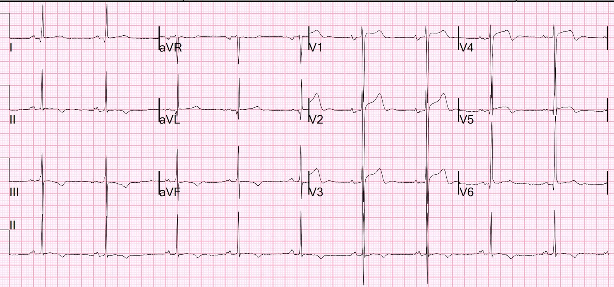
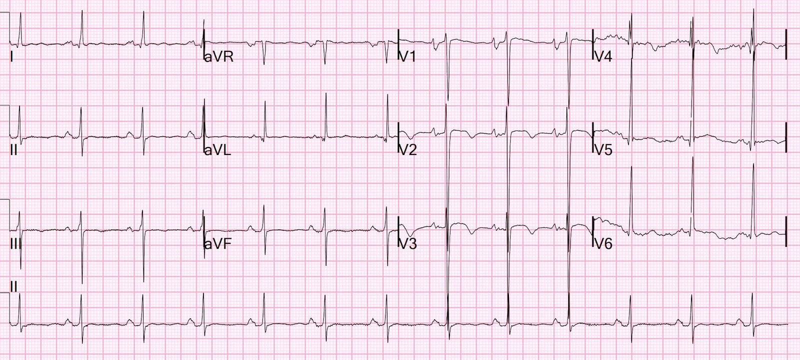
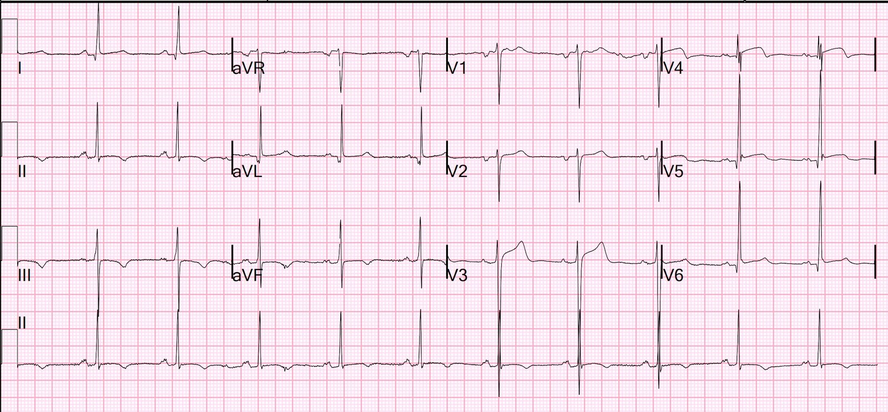
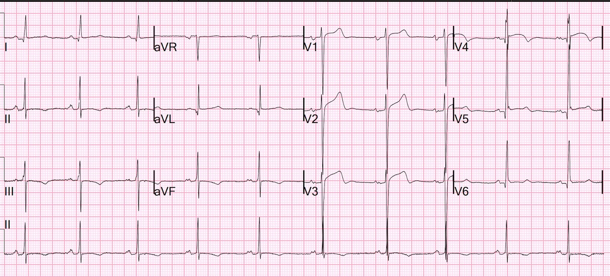
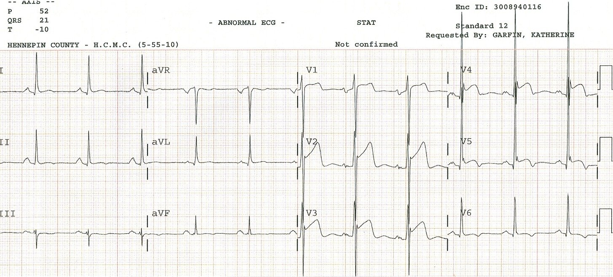
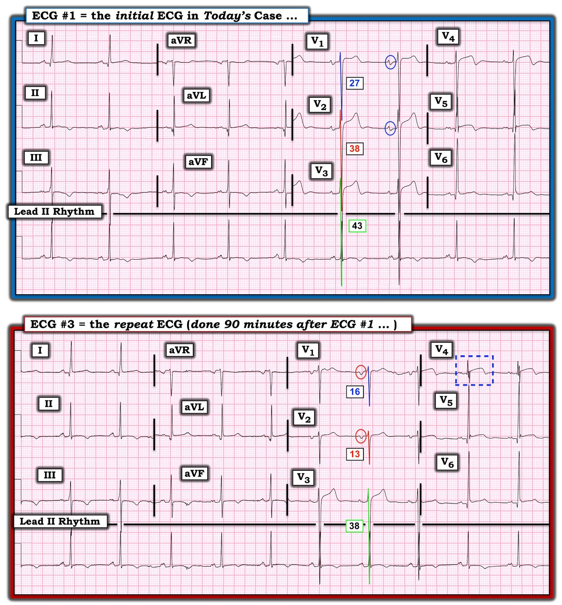
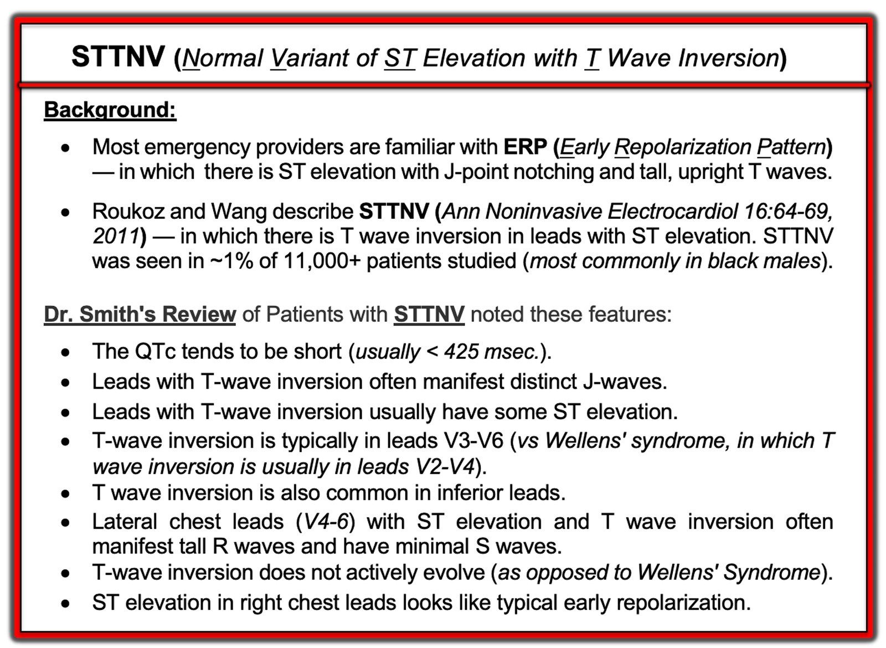
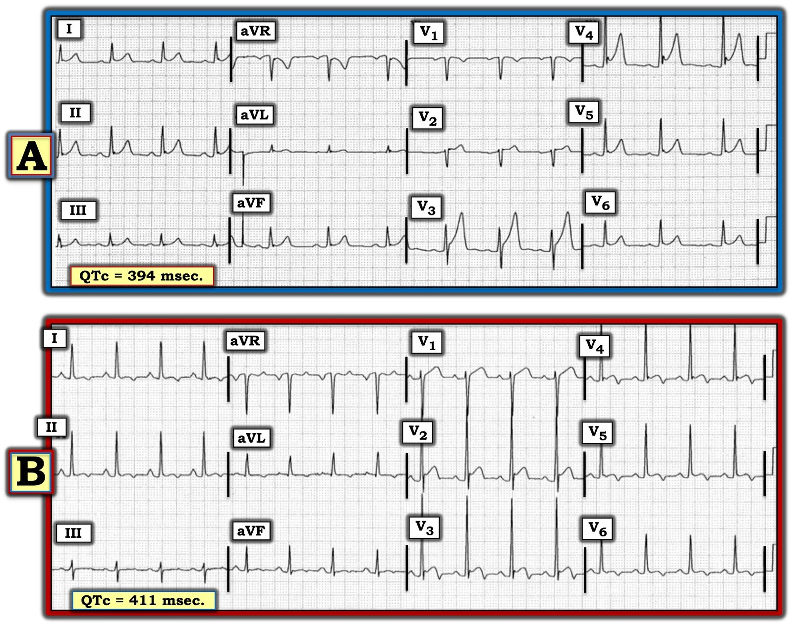

06/10/2022 — Đau ngực cấp: “Kích hoạt phòng thông tim!!!!!” Hay không?
Bản dịch tiếng Việt của bài "Acute chest pain: “Activate the Cath Lab!!!!!” Or not?" – Dr. Smith’s ECG Blog. Giữ nguyên toàn bộ 12 hình ảnh của bản gốc.
Tôi được gọi đến phòng hồi sức để xử trí một bệnh nhân STEMI.
Tôi bước vào khu hồi sức và được đưa cho điện tâm đồ này:


Tôi đã nói gì?
Trong vòng 3 giây, tôi nói: “Đó là một cú lừa (Fakeout)”. (tức là một hình ảnh giả STEMI)
Mọi người đều bối rối. Bệnh nhân này đến viện vì đau ngực và có ST chênh lên, họ chắc chắn đây là STEMI và định kích hoạt phòng thông tim (cath lab).
Điều thú vị là người đồng nghiệp rất giỏi của tôi, Richard Gray — người cũng đọc mọi bài viết trên blog của tôi — đang làm việc ở khu phân loại (triage) và đã xem điện tâm đồ này ngay khi vừa ghi xong, và lập tức nhận ra đây là một hình ảnh giả STEMI. Anh ấy đã vào hồ sơ bệnh án và tìm thấy các điện tâm đồ cũ tương tự:
6 tháng trước


Trước đây đã có ST chênh lên, nhưng không nhiều bằng.
BS. Gray đã nhận ra điện tâm đồ lúc phân loại (triage) là một hình ảnh giả STEMI, và đã phân bệnh nhân vào khu Không hồi sức, vì biết rằng đây không phải STEMI hay OMI.
Bệnh sử
Tôi nói chuyện với bệnh nhân và anh ấy cho biết hiện có đau ngực nhẹ. BS. Gray kể lại rằng lý do vào viện quan trọng nhất của bệnh nhân là khó thở, không phải đau ngực. Tôi xem hồ sơ bệnh án và thấy bệnh nhân trước đây đã được chẩn đoán suy tim. Vì đại đa số bệnh nhân suy tim đều đã được chụp mạch vành, tôi tìm kết quả chụp và thấy 9 tháng trước anh ấy đã có một lần chụp mạch vành âm tính (“không có bệnh mạch vành tắc nghẽn trên chụp mạch”). Anh ấy có bệnh cơ tim không do thiếu máu cục bộ, nghi do tăng huyết áp. Huyết áp hôm đó không tăng nhiều lắm dù bệnh nhân đã ngưng thuốc.
Chúng tôi ghi thêm một điện tâm đồ ở phút thứ 90:


Điều thú vị là lúc này ST chênh lên ít hơn.
Thông thường, khi ST chênh lên (hoặc sóng T tối cấp hoặc ST chênh xuống) nhiều hơn trong lúc đau so với sau khi hết đau, đó là bằng chứng tốt cho thấy các dấu hiệu lúc đau thực sự là dấu hiệu thiếu máu cục bộ.
Nhưng tôi biết nhờ nhận diện rằng đây là những dấu hiệu không do thiếu máu cục bộ.
Xem lại hồ sơ bệnh án:
Tiền sử bệnh cơ tim, có lẽ do tăng huyết áp
Chụp mạch vành âm tính 9 tháng trước — âm tính
Siêu âm tim 9 tháng trước:
Thất trái giãn nhẹ.
Bề dày thành thất trái bình thường.
Chức năng tâm thu thất trái giảm nặng, EF ước tính 13%.
Không có rối loạn vận động thành khu trú.
Kiểu đổ đầy thất trái dạng hạn chế, phù hợp với tăng áp lực tim trái.
Thất phải nổi bật và chức năng tâm thu thất phải giảm nặng.
Troponin I độ nhạy cao lần đầu là 30 ng/L (Abbott Architect, giới hạn trên tham chiếu (URL) = 34 ng/L ở nam, 16 ở nữ), sau đó ở giờ thứ 2 là 31 ng/L, rồi 26 ng/L ở giờ thứ 4. Đã loại trừ nhồi máu cơ tim.
Ngay cả khi troponin cao hơn URL (trong khoảng 35-100 ng/L, tôi cũng sẽ nghi ngờ rằng đó là do tổn thương cơ tim mạn tính, hoặc tổn thương cơ tim cấp do đợt cấp của suy tim.
Sáng hôm sau, khi bệnh nhân vẫn còn ở khoa cấp cứu (ED) để điều trị đợt cấp suy tim nhẹ tại khoa cấp cứu quá tải:


Bệnh nhân được xuất viện.
Những điểm cần học: Làm sao tôi biết đây là một hình ảnh giả STEMI?
–Bởi vì tôi nhận diện điện tâm đồ giống như nhận diện khuôn mặt. Tôi đã gặp hình ảnh này nhiều lần và biết nó là gì. Người ta phải xem thật nhiều điện tâm đồ, xem nhiều ca OMI đã được xác định và nhiều hình ảnh giả đã được xác định, thì mới nhận ra được đâu là OMI và đâu không phải OMI.
–Xem nhiều ca sóng T đảo ngược lành tính (Benign T-wave Inversion) và phần giải thích tại đây:
Understanding this pathognomonic ECG would have greatly benefitted the patient. (Hiểu được điện tâm đồ đặc hiệu chẩn đoán này hẳn đã giúp ích rất nhiều cho bệnh nhân.)
Xem các ca phối hợp giữa ST chênh lên do LVH và sóng T đảo ngược lành tính dưới đây, phần lớn trong số đó là các lần kích hoạt phòng thông tim dương tính giả. (Cả 4 điện tâm đồ dưới đây đều không do thiếu máu cục bộ!)




===================================
BÌNH LUẬN CỦA TÔI, bởi KEN GRAUER, MD (4/10/2022):
===================================
Như BS. Smith đã nói — Nhận ra rằng bản ghi hôm nay không phải là một OMI cấp cũng giống như “nhận ra những khuôn mặt mà bạn đã gặp thường xuyên và quen biết”.
- Với hy vọng nâng cao khả năng nhận diện nhanh của chúng ta — BS. Smith đã bổ sung vào phần bàn luận ở trên một số ca minh họa vài biến thể của sự phối hợp ST chênh lên + LVH + sóng T đảo ngược lành tính. Có rất nhiều “hương vị” của loại bản ghi lành tính này — vì vậy càng xem nhiều ví dụ — thì càng dễ nhận ra rằng điện tâm đồ trước mặt bạn với ST chênh lên kèm sóng T đảo ngược ở nhiều chuyển đạo không phải là một bản ghi cần kích hoạt phòng thông tim!
- Với bạn đọc muốn có thêm bản ghi để luyện tập — bài đăng ngày 22 tháng Ba năm 2022 của BS. Meyers trình bày liên tiếp nhanh thêm 18 “hương vị” của BTWI (Benign T Wave Inversion – sóng T đảo ngược lành tính). Thêm vào đó — Bình luận của tôi ở cuối trang trong bài ngày 22 tháng Ba đó bổ sung một phần “đào sâu” về lý do tại sao điện tâm đồ ban đầu trong ca đó là lành tính.
- LƯU Ý: Tôi đã thêm một PHẦN BỔ SUNG ở bên dưới trên trang này (có minh họa trong Hình 2 và 3) — trong đó tôi tổng hợp các điểm MẤU CHỐT từ một bài tổng quan của BS. Smith về những đặc điểm điện tâm đồ gợi ý rằng một hình ảnh ST chênh lên kèm sóng T đảo ngược nhất định nhiều khả năng là lành tính.
TRỌNG TÂM HÔM NAY CỦA TÔI:
Để củng cố những điểm quan trọng mà BS. Smith đã nêu trong phần bàn luận ở trên — tôi nghĩ đáng để tập trung vào những đặc điểm trên bản ghi ban đầu hôm nay đã giúp BS. Smith ngay lập tức biết rằng không cần thông tim.
- Để làm điều này — tôi đã sao lại và đánh dấu điện tâm đồ thứ 1 và thứ 3 được trình bày ở trên trong phần bàn luận của BS. Smith (Hình 1).
2 Câu hỏi MẤU CHỐT đặt ra từ Hình 1:
- Tại sao điện tâm đồ #1 không gợi ý một OMI cấp?
- Tại sao mức ST chênh lên lại ít hơn ở điện tâm đồ #3 — được ghi chỉ 90 phút sau đó?


Tại sao điện tâm đồ #1 Không phải là OMI Cấp:
Nhịp trong điện tâm đồ #1 là nhịp chậm xoang, tần số ngay dưới 60 lần/phút. Tất cả các khoảng (PR, QRS, QTc) và trục đều bình thường.
- Dù chúng ta không bao giờ được biết tuổi của bệnh nhân này — biên độ QRS ở các chuyển đạo trước tim tăng ở mức cực độ. Bất kể tuổi tác — tiêu chuẩn điện thế của LVH đều dễ dàng bị vượt qua.
Về Thay đổi Q–R–S–T:
- Sóng Q — Có sóng Q nhỏ và hẹp ở 4 chuyển đạo bên (tức là ở các chuyển đạo I,aVL; V5,V6). Xét kích thước sóng R ở các chuyển đạo này — độ sâu của các sóng Q này không quá mức (tức là chúng là sóng q “vách” bình thường).
- Tăng tiến sóng R — Có vùng chuyển tiếp muộn ở các chuyển đạo trước tim — vì sóng R không cao hơn độ sâu sóng S cho đến giữa V4 và V5 (vùng chuyển tiếp thường nằm giữa V2 và V4). Dù vậy — mỗi chuyển đạo trước tim phía trước ( = V1-V4) đều có sóng r rõ ràng, nên vùng chuyển tiếp hơi muộn này không đáng lo ngại.
- Hình dạng ST-sóng T ở các Chuyển đạo trước tim — ST chênh lên 2-2.5 mm ở các chuyển đạo V1-V3. Đoạn ST vẫn có dạng vòm (coving), với mức ST chênh lên ít hơn ở các chuyển đạo V4,V5 (và có lẽ ST chênh lên rất nhẹ ở V6). Có gợi ý sóng T bắt đầu đảo ngược ở các chuyển đạo V1-3 — và phần cuối sóng T đảo ngược rõ ràng ở các chuyển đạo V4,V5.
- Ở các Chuyển đạo chi — Đoạn ST ở các chuyển đạo bên I,aVL giống với hình dạng ở chuyển đạo V6. Đoạn ST ở các chuyển đạo dưới có dạng vòm (dù không chênh lên) — kèm sóng T đảo ngược đối xứng sâu vài milimét.
NHẬN ĐỊNH của tôi về điện tâm đồ #1:
Như BS. Gray và BS. Smith đã nói — Mặc dù có ST chênh lên và sóng T đảo ngược ở nhiều chuyển đạo của điện tâm đồ #1 — điện tâm đồ này không gợi ý OMI cấp. Không cần thông tim dựa trên điện tâm đồ này.
- Như đã nêu ở trên — biên độ QRS ở các chuyển đạo trước tim rất lớn! (tức là sóng S >25 mm ở 4 chuyển đạo trước tim phía trước liên tiếp — và sóng R ở chuyển đạo V6 ~25 mm). Do đó — mức ST chênh lên phía trước tương đối thấy ở các chuyển đạo V1-V3 rõ ràng là không bất tương xứng khi xét đến sự tăng biên độ QRS rất mạnh này. Thậm chí, mức ST chênh lên phía trước còn ít hơn mức tôi dự đoán ở một bệnh nhân có LVH nhiều như vậy.
- LƯU Ý: Để tìm hiểu thêm về khái niệm tính tương xứng (proportionality) và “tăng gánh” thất trái biểu hiện thành ST chênh lên phía trước — Xem Bình luận của tôi ở cuối trang trong bài đăng ngày 20 tháng Sáu năm 2020 trên Dr. Smith’s ECG Blog.
- Sóng T đảo ngược ở điện tâm đồ #1 rõ nhất ở các chuyển đạo trước tim giữa (đồng thời cũng thấy ở các chuyển đạo dưới). Sự phân bố này hoàn toàn phù hợp với phần tổng hợp của BS. Smith về những đặc điểm điện tâm đồ điển hình của STTNV ( = hình ảnh Normal Variant – biến thể bình thường của ST chênh lên kèm sóng T đảo ngược) — như tôi tóm tắt dưới đây trong Hình 2.
Cụ thể (tức là xét các đặc điểm điện tâm đồ trong Hình 2) — tôi ghi nhận các dấu hiệu sau ở điện tâm đồ #1:
- QTc tương đối ngắn (tức là ~0.40 giây [người dịch: nguyên văn ghi “msec.”, nhiều khả năng là lỗi đánh máy]).
- Có khía điểm J rõ ở chuyển đạo V5 (kèm “trát đậm” sóng R tận ở chuyển đạo V6).
- Những chuyển đạo trước tim có sóng T đảo ngược cũng biểu hiện một mức ST chênh lên.
- Sóng T đảo ngược rõ nhất ở các chuyển đạo V4,V5 (vị trí này lệch về phía bên nhiều hơn so với thường thấy trong hội chứng Wellens).
- Sóng T đảo ngược thấy ở các chuyển đạo thành dưới.
- Biên độ sóng R tăng đáng kể ở các chuyển đạo bên (và sóng S rất nhỏ ở chuyển đạo bên V5 — nơi có ST chênh lên và sóng T đảo ngược).
- Bổ sung cho những điểm trên — tôi xin thêm: i) Không có hiện tượng mất biên độ sóng R ở các chuyển đạo phía trước (như thường thấy ở bệnh nhân tắc LAD đang tiến triển); ii) Biên độ QRS tăng vọt ở rất nhiều chuyển đạo gần như đang ‘gào lên’ — “Tôi bị LVH!” — và, iii) Như Dr. Smith đã nói — với kinh nghiệm, điện tâm đồ này có một “gương mặt” mà tôi đã gặp nhiều lần và nhận ra là LVH kèm ST chênh lên và sóng T đảo ngược không do tắc mạch vành cấp.
VẬY TẠI SAO ST lại chênh lên Ít hơn ở điện tâm đồ #3?
Trong phần bàn luận ở trên — Dr. Smith nhấn mạnh một điểm quan trọng: thông thường, khi mức ST chênh lên giảm đi cùng với mức độ đau ngực giảm — điều này thường gợi ý rằng ST chênh lên có trước đó trong lúc đau ngực là do thiếu máu cục bộ.
- Có nhiều lý do khiến chân lý chung này không đúng trong ca hôm nay!
Hãy XEM LẠI 2 điện tâm đồ trong Hình 1:
==============================
BẠN có nhận thấy những điều sau khi so sánh 2 điện tâm đồ trong Hình 1 không?
- Hình thái QRS ở các chuyển đạo trước tim đã thay đổi đáng kể trong 90 phút kể từ khi ghi điện tâm đồ #1. Cụ thể — i) độ sâu sóng S ở các chuyển đạo V1,V2 của điện tâm đồ #3 nay nhỏ hơn nhiều (tức là 16 và 13 mm — so với 27 và 38 mm ở điện tâm đồ #1); ii) biên độ QRS ở chuyển đạo V4 đã giảm thành một phức bộ nhỏ, đẳng điện ở điện tâm đồ #3 (trong hình chữ nhật chấm chấm màu XANH). Ngược lại — sóng S vẫn rất lớn ở chuyển đạo V4 của điện tâm đồ #1; và, iii) biên độ sóng R đã trở nên lớn hơn nhiều ở chuyển đạo V5 của điện tâm đồ #3.
Lý do có lẽ của sự thay đổi hình thái QRS ở các chuyển đạo trước tim giữa 2 bản ghi này được gợi ý bởi sự thay đổi hình thái sóng P ở chuyển đạo V1 và V2.
- Sóng P ở các chuyển đạo V1,V2 của điện tâm đồ #1 có hai pha — với một sóng lệch dương ban đầu rõ ràng (tức là trong các vòng tròn XANH ở điện tâm đồ #1).
- Ngược lại — sóng P ở các chuyển đạo V1,V2 của điện tâm đồ #3 đều âm! (tức là trong các vòng tròn ĐỎ ở điện tâm đồ #3). Ngoài việc sóng S nhỏ đi — hình dạng của phức bộ QRS ở V1,V2 của điện tâm đồ #3 nay rất giống hình dạng phức bộ QRS ở chuyển đạo aVR (trong khi hình dạng các phức bộ QRS ở V1,V2 của điện tâm đồ #1 chẳng hề giống hình dạng QRS ở aVR của bản ghi đó!).
- ĐIỂM THEN CHỐT (PEARL) — Như tôi đã nhấn mạnh trong Bình luận của tôi ở cuối trang của bài ngày 17 tháng Tư năm 2022 trên Dr. Smith’s ECG Blog — các đặc điểm trên gợi ý mạnh rằng các chuyển đạo V1,V2 ở điện tâm đồ #3 đã bị đặt sai vị trí (có lẽ cao hơn 1-2 khoang liên sườn). Tôi rất nghi ngờ rằng lý do của sự thay đổi mức ST chênh lên giữa 2 điện tâm đồ trong Hình 1 — là do vị trí đặt chuyển đạo trước tim đã thay đổi!
- ĐIỀU CỐT LÕI trong ca hôm nay: Như Dr. Smith đã nói — không có chỉ định thông tim dựa trên các điện tâm đồ liên tiếp này.
=======================================
PHẦN BỔ SUNG:
Với hy vọng giúp nhận ra dễ hơn một số dạng ST chênh lên và sóng T đảo ngược không liên quan đến hội chứng vành cấp — tôi đã tổng hợp trong Hình 2 một số dấu hiệu điện tâm đồ MẤU CHỐT từ bài điểm lại của Dr. Smith về nghiên cứu của Roukoz & Wang trên hơn 11.000 bệnh nhân.
- Trong Hình 3 — tôi đã phỏng theo 2 điện tâm đồ minh họa từ nghiên cứu của Roukoz & Wang, so sánh các đặc điểm giúp phân biệt ERP với STTNV.


====================================

